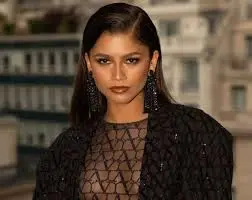
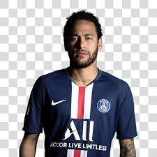
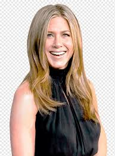
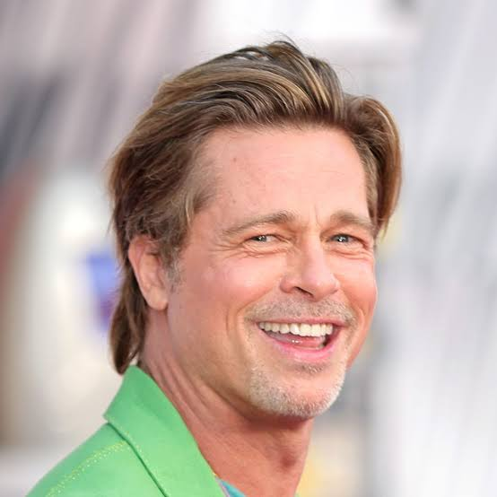

Zendaya é uma atriz, cantora e modelo americana, conhecida por sua
versatilidade e talento. Ela começou sua carreira na série "Shake It Up"
da Disney e ganhou destaque como Rue Bennett em "Euphoria", tornando-se a
atriz mais jovem a ganhar um Emmy de Melhor Atriz em Série Dramática.
Zendaya também estrelou em filmes como "Homem-Aranha" e "Duna". Além de
sua carreira de sucesso, ela é um ícone da moda e uma defensora de causas
sociais, sendo admirada por sua maturidade e influência cultural.

Neymar é um dos maiores jogadores de futebol do mundo, conhecido por sua
habilidade, velocidade e drible. Nascido em 1992, ele começou no Santos FC
e ganhou destaque internacional no Barcelona, onde conquistou vários
títulos. Em 2017, transferiu-se para o PSG, tornando-se o jogador mais
caro da história. Neymar é peça-chave na seleção brasileira e ícone da
cultura pop, com grande presença nas redes sociais e um estilo de vida
extravagante.
Tom Cruise é um ator icônico de Hollywood, famoso por sua versatilidade em
papéis de ação e drama. Nascido em 1962, ele ganhou destaque com filmes
como "Top Gun" e "Missão: Impossível", onde é conhecido por realizar suas
próprias cenas de ação. Além de seu sucesso no cinema, Cruise é associado
à Cientologia e sua vida pessoal atrai muita atenção da mídia. Admirado
por seu profissionalismo, ele continua sendo uma figura dominante na
indústria cinematográfica.

Jennifer Aniston é uma atriz americana famosa por seu papel como Rachel
Green em "Friends", que lhe rendeu grande sucesso nos anos 1990. Além da
TV, ela estrelou em várias comédias românticas populares e é conhecida por
seu carisma e estilo. Aniston também é uma produtora bem-sucedida e
filantropa, com sua vida pessoal frequentemente em destaque na mídia. Ela
continua sendo uma figura influente na indústria do entretenimento.

Brad Pitt é um ator e produtor americano conhecido por sua versatilidade e
charme. Nascido em 1963, ele se destacou em filmes como "Clube da Luta" e
"Bastardos Inglórios", e produziu sucessos como "12 Anos de Escravidão" e
"Moonlight". Pitt também é notável por seu trabalho humanitário e
ambiental e por sua vida pessoal, incluindo seu casamento com Angelina
Jolie. Ele continua a ser uma figura influente e admirada em Hollywood.